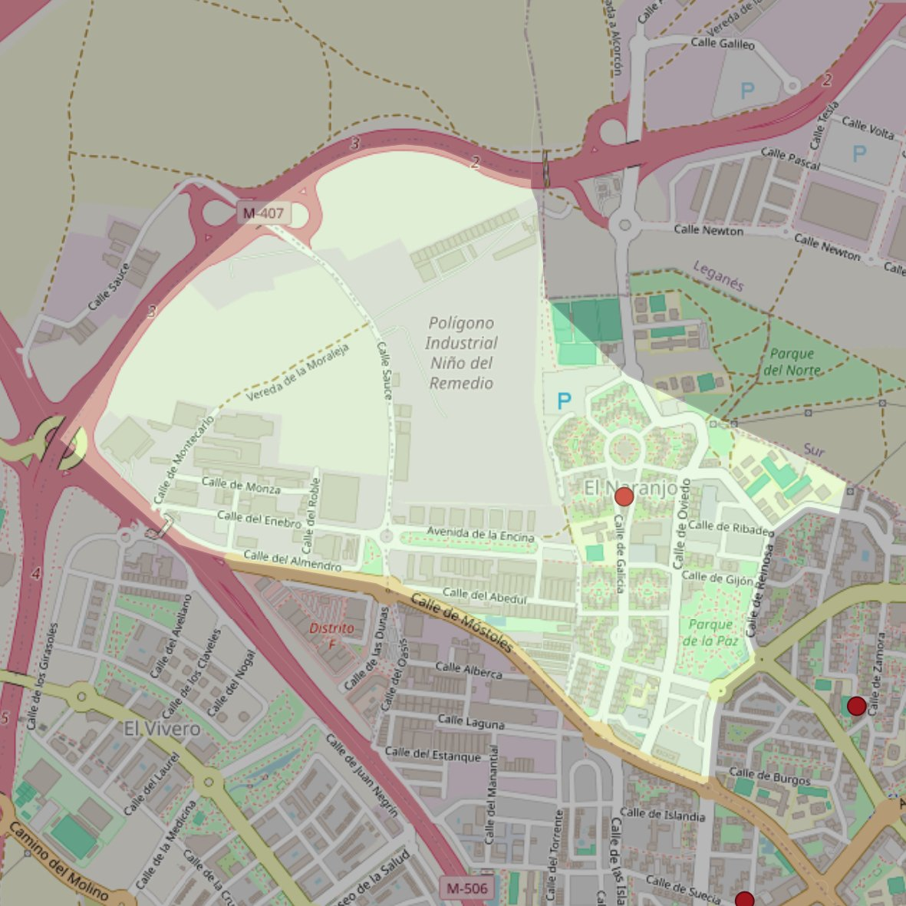

María Auxiliadora

- Arciprestazgo
- Fuenlabrada
- Población
- Fuenlabrada
- Dirección postal
- c/ Galicia, 27
- Código postal
- 28942
- Extensión
- 1,69 km² (169 ha)
- Teléfono
- 916 081 834
- Correo electrónico
- mariaauxiliadora-fuenlabrada@diocesisgetafe.es
Límites territoriales según el decreto
"Partiendo de la confluencia de la calle Móstoles con la Avenida de Cantabria, arrancan por el eje de la Avenida de Cantabria (en dirección noreste); continúan por el eje de la calle Reinosa (en dirección norte), por el eje de la Avenida de las Comarcas (en dirección noreste y hasta la calle Santoña), por una línea recta imaginaria hasta el término municipal de Leganés (en dirección norte), por los límites de los términos municipales de Fuenlabrada y Leganés (en dirección noroeste),l por el eje de la carretera M-407 (en dirección suroeste) y por el eje de la autovía Móstoles-Fuenlabrada y por el eje de la calle Móstoles (en dirección sureste) hasta la confluencia con la Avenida de Cantabria, punto de partida" (Boletín Oficial, Junio-2000, pág. 547-548)